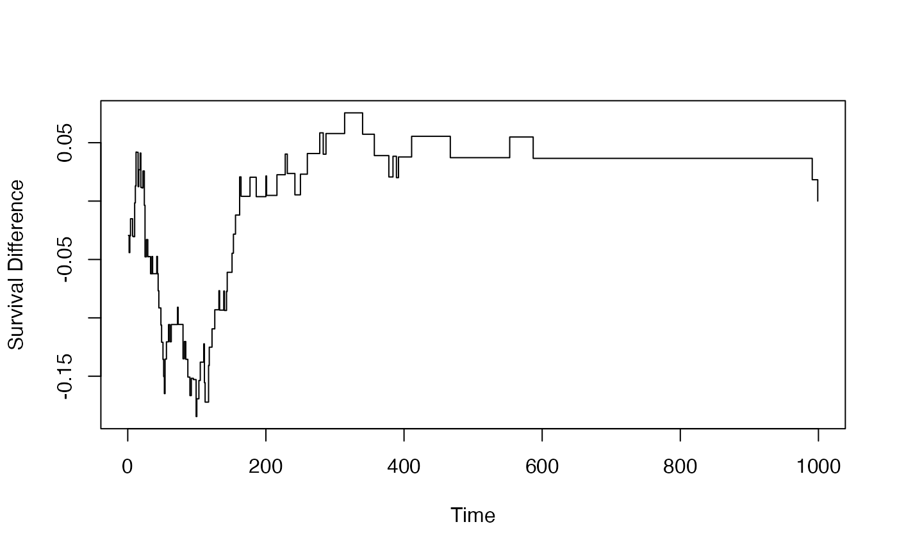
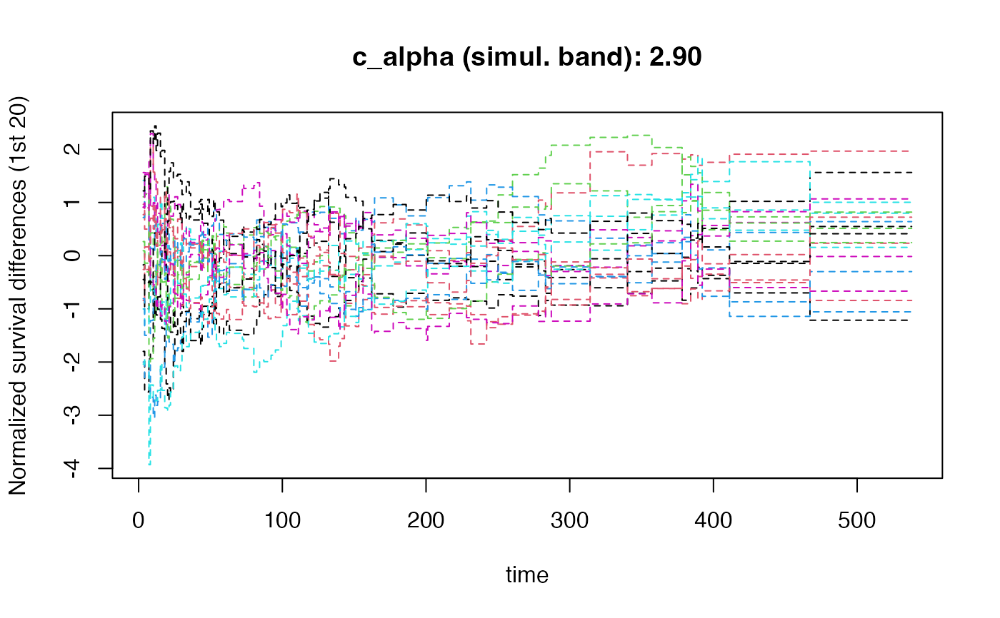

Calculates the difference in Kaplan-Meier curves between two groups, with confidence intervals and optional resampling-based simultaneous confidence bands.
Usage
KM_diff(
df,
tte.name = "tte",
event.name = "event",
treat.name = "treat",
weight.name = NULL,
at_points = sort(df[[tte.name]]),
alpha = 0.05,
seedstart = 8316951,
draws = 0,
risk.points = NULL,
draws.band = 0,
tau.seq = 0.25,
qtau = 0.025,
show_resamples = TRUE,
modify_tau = FALSE
)Arguments
- df
Data frame containing survival data.
- tte.name
Character; name of time-to-event variable in
df.- event.name
Character; name of event indicator variable in
df(1=event, 0=censored).- treat.name
Character; name of treatment group variable in
df(0=control, 1=treatment).- weight.name
Character or NULL; name of weights variable in
df.- at_points
Numeric vector; time points for calculation. Default: sorted unique event times.
- alpha
Numeric; significance level for confidence intervals. Default: 0.05.
- seedstart
Integer; random seed for reproducibility. Default: 8316951.
- draws
Integer; number of draws for pointwise variance estimation. Default: 0.
- risk.points
Numeric vector; time points for risk table display.
- draws.band
Integer; number of draws for simultaneous confidence bands. Default: 0.
- tau.seq
Numeric; step size for tau sequence when
modify_tau=TRUE. Default: 0.25.- qtau
Numeric; quantile for tau range restriction. Default: 0.025.
- show_resamples
Logical; whether to plot resampled curves. Default: TRUE.
- modify_tau
Logical; whether to restrict time range for simultaneous bands. Default: FALSE.
Value
A list containing:
- at_points
Time points used in calculations
- surv0, surv1
Survival estimates for control and treatment groups
- sig2_surv0, sig2_surv1
Variance estimates for survival curves
- dhat
Survival difference (S1 - S0) at each time point
- sig2_dhat
Variance of survival difference
- lower, upper
Pointwise confidence limits (1 - alpha/2)
- sb_lower, sb_upper
Simultaneous band limits (if draws.band > 0)
- c_alpha_band
Critical value for simultaneous band (if draws.band > 0)
- dhat_star
Matrix of resampled differences (if draws.band > 0)
- Zdhat_star
Standardized resampled differences (if draws.band > 0)
Details
This function computes the difference in Kaplan-Meier survival curves, delta(t) = S_1(t) - S_0(t),
along with variance estimates and confidence intervals.
When draws.band > 0, simultaneous confidence bands are constructed using
the supremum distribution of the standardized difference process. These bands
maintain the specified coverage probability across all time points simultaneously.
The variance is estimated using Greenwood's formula for unweighted data, or
resampling-based methods when draws > 0.
Confidence Intervals vs Bands
Pointwise CIs (
lower,upper): Cover the true difference at each time point with probability 1-alphaSimultaneous bands (
sb_lower,sb_upper): Cover the entire difference curve with probability 1-alpha
See also
df_counting for full survival analysis
plotKM.band_subgroups for visualization
cumulative_rmst_bands for RMST analysis
Other survival_analysis:
cox_rhogamma(),
df_counting(),
wt.rg.S()
Examples
library(survival)
str(veteran)
#> 'data.frame': 137 obs. of 8 variables:
#> $ trt : num 1 1 1 1 1 1 1 1 1 1 ...
#> $ celltype: Factor w/ 4 levels "squamous","smallcell",..: 1 1 1 1 1 1 1 1 1 1 ...
#> $ time : num 72 411 228 126 118 10 82 110 314 100 ...
#> $ status : num 1 1 1 1 1 1 1 1 1 0 ...
#> $ karno : num 60 70 60 60 70 20 40 80 50 70 ...
#> $ diagtime: num 7 5 3 9 11 5 10 29 18 6 ...
#> $ age : num 69 64 38 63 65 49 69 68 43 70 ...
#> $ prior : num 0 10 0 10 10 0 10 0 0 0 ...
veteran$treat <- as.numeric(veteran$trt) - 1
# Basic KM difference
result <- KM_diff(
df = veteran,
tte.name = "time",
event.name = "status",
treat.name = "treat"
)
# Plot the difference
plot(result$at_points, result$dhat, type = "s",
xlab = "Time", ylab = "Survival Difference")

# With simultaneous confidence bands
result_band <- KM_diff(
df = veteran,
tte.name = "time",
event.name = "status",
treat.name = "treat",
draws.band = 1000,
modify_tau = TRUE
)
